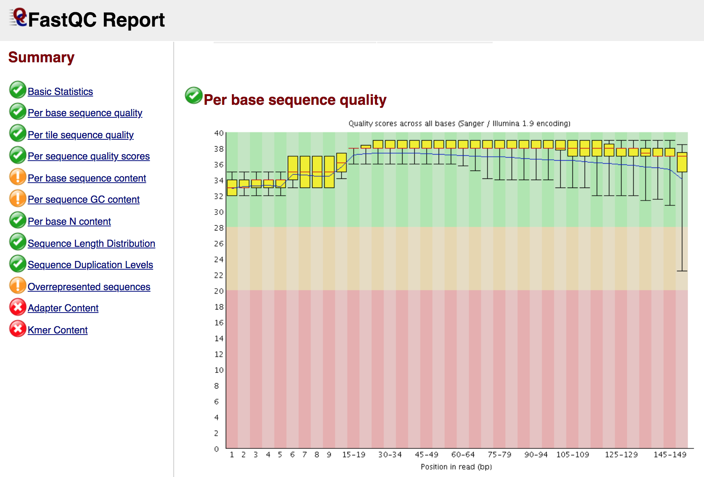

2. Quality filtering of reads¶
2.1. Reads quality control¶
The first step is the quality-control of the reads generated by the sequencing platform in the fastq file format.
To do that, we will use FastQC, which provides a modular set of analyses that you can use to have a first impression of whether your data has any problems of which you should be aware before doing any further analysis.
To run FastQC type the following command:
fastqc filename.fastq.gz
To analyze multiple fastq files you can run FastQC as follows:
fastqc *.fastq.gz
At the end of the analysis, FastQC generates for each input file a summary report, like in the screenshot below:
Note
You can download the reports of FastQC (and any other file) in your laptop with the command
scp(Secure Copy), which allows files to be copied to, from, or between different hosts. It uses ssh for data transfer and provides the same authentication and same level of security as ssh. For example, to copy from a remote host (our server) to your computer:scp username@remotehost:/full_path_to_file /some/local/directory
To copy a folder you need to call the option
-rscp -r username@remotehost:/full_path_to_file /some/local/directory
If you are using a
pemfile to connect to the server, you have to use in order to download the files:scp -i filename.pem -r username@remotehost:/full_path_to_file /some/local/directory
2.2. Reads quality filtering¶
Reads filtering is a crucial step as it will affect all downstream analyses. One of the important things to do is to trim the adapters that were used during the preparation of the genomic libraries. For this step we will use the program AdapterRemoval, which performs adapter trimming of sequencing reads and subsequent merging (collapse) of paired-end reads with negative insert sizes (an overlap between two sequencing reads derived from a single DNA fragment) into a single collapsed read. Here we have single-end reads, so we are going to just trim the adapters:
AdapterRemoval --file1 filename.fastq.gz --basename filename --minlength 30 --trimns --trimqualities --gzip
Here some of the options of AdapterRemoval:
| Option | Function |
|---|---|
| -file1 string | Forward reads input file(s) in fastq(.gz) file format. Required option (single-end reads). |
| -file2 string | Reverse reads input file(s) in fastq(.gz) file format. |
| –basename string | Default prefix for all output files for which no filename was explicitly set [current: your_output] |
| –adapter1 sequence | Adapter sequence expected to be found in mate 1 reads [current: AGATCGGAAGAGCACACGTCTGAACTCCAGTCACNNNNNNATCTCGTATGCCGTCTTCTGCTTG] |
| –adapter2 sequence | Adapter sequence expected to be found in mate 2 reads [current: AGATCGGAAGAGCGTCGTGTAGGGAAAGAGTGTAGATCTCGGTGGTCGCCGTATCATT] |
| –trimns | If set, trim ambiguous bases (N) at 5’/3’ termini [current: off] |
| –trimqualities | If set, trim bases at 5’/3’ termini with quality scores <= to –minquality value [current: off] |
| –minquality integer | PHRED inclusive minimum values; see –trimqualities for details [current: 2] |
| –minlength integer | Reads shorter than this length are discarded following trimming [current: 15]. |
| –collapse | When set, paired ended read alignments of –minalignmentlength or more bases are combined into a single consensus sequence, representing the complete insert |
| –minalignmentlength integer | If –collapse is set, paired reads must overlap at least this number of bases to be collapsed, and single-ended reads must overlap at least this number of bases with the adapter to be considered complete template molecules [current: 11]. |
Note
Here we are using a Single-End library, for paired-end libraries the command to clip the adapter and merge the read pairs is:
AdapterRemoval --file1 filename_R1.fastq --file2 filename_R2.fastq --basename filename --minlength 30 --trimns --trimqualities --collapse --gzip
Several tools can be used for reads pre-processing and filtering, for example: ClipAndMerge, leeHom, Atropos, fastp.
After reads filtering open your adapter-trimmed fastq file again in FastQC and see the differences before (the two original paired-end reads files) and after (the collapsed reads file) adapter trimming.